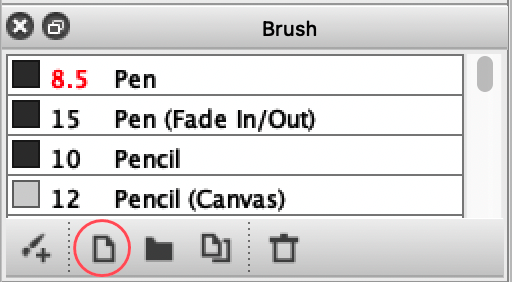
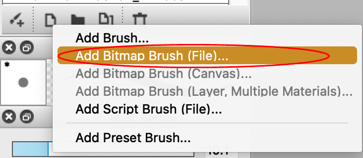
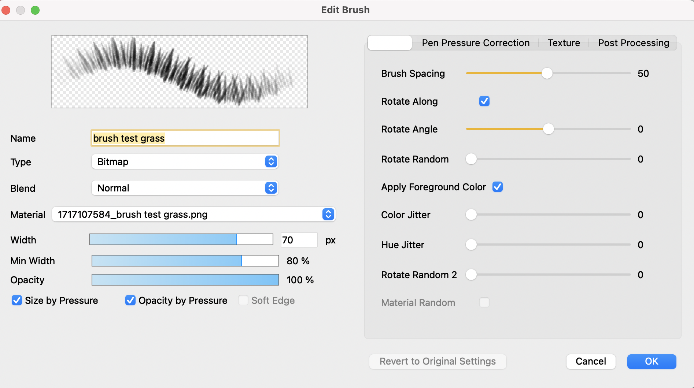

This shows you how to make a custom brush from an image.
You can create custom brushes in FireAlpaca from images. This tutorial shows you how to make a custom brush from an existing file.
In the "Brush" window on the left side of the screen, click the "Add Brush" icon, shown below.

Note: The icon in the left corner of the window with a brush and plus sign opens the Brush Store. It is NOT for creating a custom brush.
To create a brush from an existing image, click "Add Bitmap Brush (File)." This will open your file explorer.

Note: Selecting "Add Brush" allows you to create a custom brush based on a default brush. This is NOT for creating a brush from an image.
In the file explorer, locate and select the image that you would like to turn into a brush. Selecting an image will open the "Edit Brush" window in FireAlpaca.
In the "Edit Brush" window, edit the brush name, type, and other settings as desired, then press "OK" to save the brush settings.

Following these steps, you will have created a custom brush from an existing image.